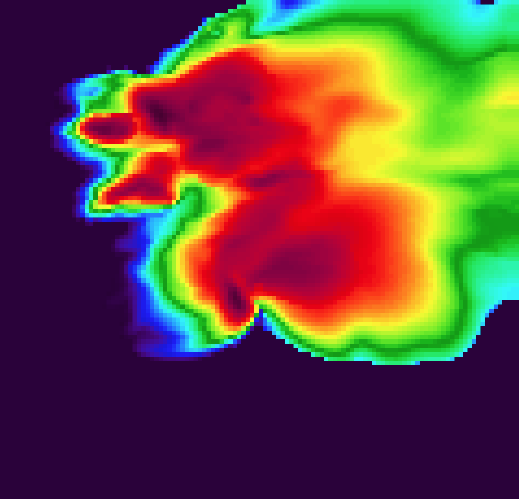

ATM OCN 718: Dynamics of Moist Convective Systems
Spring 2018 - Tuesday/Thursday 2:30P - 3:45P
Instructor: Dr. Ryan Sobash
Syllabus:
aos718_syllabus.pdf
Slides
Readings
Assignments
Week 1
week1_slides_compressed.pdf
(<1 MB)
Markowski & Richardson Chapters 1, 2, 3.1
Doswell and Rasmussen (1994):
The Effect of Neglecting the Virtual Temperature Correction on CAPE Calculations
Doswell and Markowski (2004):
Is Buoyancy a Relative Quantity?
Week 2
week2_slides_compressed.pdf
(3.8 MB)
Week 3
week3_slides_compressed.pdf
(4.1 MB)
Markowski & Richardson Chapter 7, 8.1
Weisman and Klemp (1982):
The Dependence of Numerically Simulated Convective Storms on Vertical Wind shear and Buoyancy
Homework 1/2
Week 4
week4_slides_compressed.pdf
(6.3 MB)
Markowski & Richardson Chapter 5.3, 8.2, 8.3
Week 5
week5_slides_compressed.pdf
(3.2 MB)
Markowski & Richardson Chapter 8.4
Davies-Jones (1984):
Streamwise Vorticity: The Origin of Updraft Rotation in Supercell Storms
Week 6
week6_slides_compressed.pdf
(5.2 MB)
Homework 3
Week 7
week7_slides_compressed.pdf
(4.8 MB)
Markowski and Richardson (2014):
The Influence of Environmental Low-Level Shear and Cold Pools on Tornadogenesis: Insights from Idealized Simulations
Other Resources
CM1 Model Webpage